Austausch und Export
Ihre Projekte liegen in der Bibliothek von LemmaLoom auf Ihrem Mac (siehe Wo die Arbeit gespeichert wird in Kapitel 2, Erste Schritte). Mit einem Export bringen Sie Arbeit aus der Bibliothek heraus, mit einem Import bringen Sie Material in sie hinein. Welcher Dateityp der richtige ist, hängt davon ab, wer die exportierte Datei als Nächstes öffnet.
Alle Beispiele verwenden das Projekt „Klimadebatte“. Es enthält elf erfundene Meinungstexte von Klimaaktivisten und Klimaskeptikern, etwa „Uns läuft die Zeit davon“ und „Die Modelle liegen daneben“, dazu das PDF-Dokument „Hitzebericht 2024“, die Webseite „Streit um die CO2-Steuer“ und die Aufnahme „Radiodebatte“. „Uns läuft die Zeit davon (Englisch)“ ist die Übersetzung von „Uns läuft die Zeit davon“; insgesamt sind es damit 15 Dokumente. Um die Beispiele nachzuvollziehen, wählen Sie Ablage ▸ Importieren ▸ Beispielprojekt. LemmaLoom legt dann in Ihrer Bibliothek automatisch ein neues Projekt „Klimadebatte“ an, bereits indiziert und in der Sprache der Oberfläche.
Ein Format wählen
| Sie möchten | Datei | Befehl |
|---|---|---|
| Ein Projekt sichern oder auf einen anderen Mac übertragen | LemmaLoom-Archiv (.llz) | Ablage ▸ Exportieren ▸ LemmaLoom-Projekt |
| Einer Kollegin oder einem Kollegen ein Set oder einige Dokumente mit Ihrer Kodierung geben | LemmaLoom-Archiv (.llz) | Ablage ▸ Exportieren ▸ LemmaLoom-Set oder LemmaLoom-Dokument |
| Ein Archiv einlesen | LemmaLoom-Archiv (.llz) | Ablage ▸ Importieren ▸ LemmaLoom-Archiv |
| Ein Projekt an Software weitergeben, die den REFI-QDA-Standard unterstützt | REFI-QDA-Projekt (.qdpx) | Ablage ▸ Exportieren ▸ REFI-QDA-Projekt |
| Ein Projekt öffnen, das mit solcher Software erstellt wurde | REFI-QDA-Projekt (.qdpx) | Ablage ▸ Importieren ▸ REFI-QDA-Projekt |
| Ein Codesystem ohne Dokumente weitergeben | REFI-QDA-Codebuch (.qdc) | Ablage ▸ Exportieren ▸ REFI-QDA-Codebuch und Ablage ▸ Importieren ▸ REFI-QDA-Codebuch |
| Mit Zahlen in einem Tabellen- oder Statistikprogramm arbeiten | CSV | Die Exportschaltfläche der Tabelle |
| Ein Diagramm in einen Aufsatz oder auf eine Folie bringen | PNG oder PDF | Die Exportschaltfläche des Diagramms |
| Ein Abfrageergebnis zusammen mit einem Protokoll seiner Entstehung aufbewahren | Markdown | Die Exportschaltfläche des Abfrageergebnisses |
Ein LemmaLoom-Archiv wählen Sie in der Regel, wenn das Material in LemmaLoom bleibt, etwa für Ihre eigenen Sicherungen, für den Umzug auf einen anderen Mac oder für die Weitergabe von LemmaLoom-Dokumenten an Kolleginnen und Kollegen, die ebenfalls mit LemmaLoom arbeiten. Ein Archiv bewahrt die Indizierung, die gesicherten Abfragen und die Verbindung zwischen einer Übersetzung und ihrem Original, sodass das Material gleich nach dem Import bereitsteht. Wenn Ihre Arbeit in LemmaLoom hinein- oder aus LemmaLoom hinausgeht (also von anderswo kommt oder anderswohin soll), verwenden Sie stattdessen ein REFI-QDA-Projekt. Es bewahrt weder die Indizierung von LemmaLoom noch die Funktionen, die darauf aufbauen.
Ablage ▸ Importieren ▸ REFI-QDA-Codebuch und alle Befehle unter Ablage ▸ Exportieren beziehen sich auf das aktive Projekt (in der Seitenleiste fett dargestellt). Solange Sie kein Projekt ausgewählt haben, sind diese Befehle alle deaktiviert.
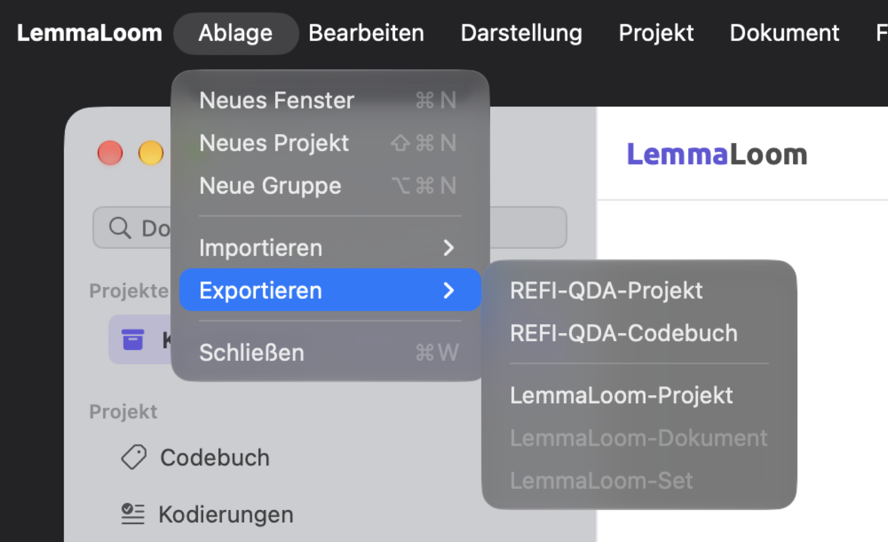
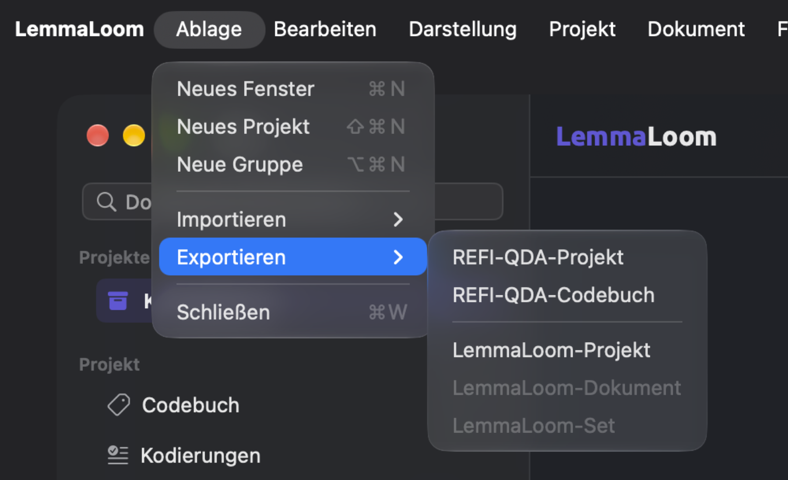
Sie können .llz-, .qdpx- und .qdc-Dateien auch importieren, indem Sie im Finder darauf doppelklicken. LemmaLoom wird dabei geöffnet, falls es noch nicht läuft. Ein Projektarchiv und ein REFI-QDA-Projekt werden jeweils zu einem neuen Projekt. Ein Codebuch, ein Set-Archiv oder ein Dokumentarchiv wird dagegen in das aktive Projekt importiert; achten Sie deshalb darauf, dass das richtige Projekt aktiv ist. Öffnet auf Ihrem Mac ein anderes Programm .qdpx- oder .qdc-Dateien, klicken Sie stattdessen mit der rechten Maustaste auf die Datei und wählen Sie Öffnen mit ▸ LemmaLoom.
Wichtige Begriffe
- Ein LemmaLoom-Archiv ist eine Exportdatei mit einem vollständigen Projekt, einem Set oder einer Auswahl von Dokumenten samt allen zugehörigen Daten aus LemmaLoom, etwa der Indizierung und den Aufnahmen.
- REFI-QDA ist ein offenes Austauschformat, mit dem sich Projekte von einem Programm für qualitative Analyse in ein anderes übertragen lassen. Das Format umfasst Dokumente, Codes, Kodierungen, Memos, Verknüpfungen, Variablen (in LemmaLoom die Attribute) und Sets innerhalb von Projekten.
- Der Umfang ist das, woraus ein Archiv erstellt wurde (ein ganzes Projekt, ein Set oder von Ihnen ausgewählte Dokumente). Er bestimmt, was archiviert wird und wie das Archiv importiert wird.
- Archive von Sets oder ausgewählten Dokumenten werden über die Namen den Gruppen, Codes und Attributen zugeordnet, die es im aufnehmenden Projekt schon gibt. Diese Zuordnung geschieht beim Import.
Der Austauschdialog
Import und Export von REFI-QDA-Dateien und LemmaLoom-Archiven laufen in einem Dialog, der oben am Hauptfenster angeheftet ist. Sobald Sie eine Datei auswählen oder im Finder auf eine Datei doppelklicken, erscheint der Dialog sofort.
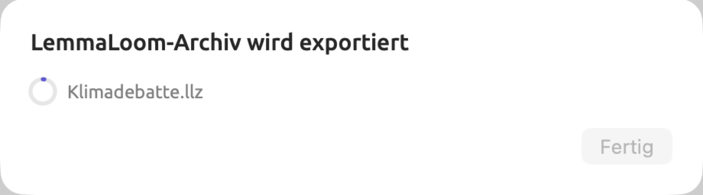
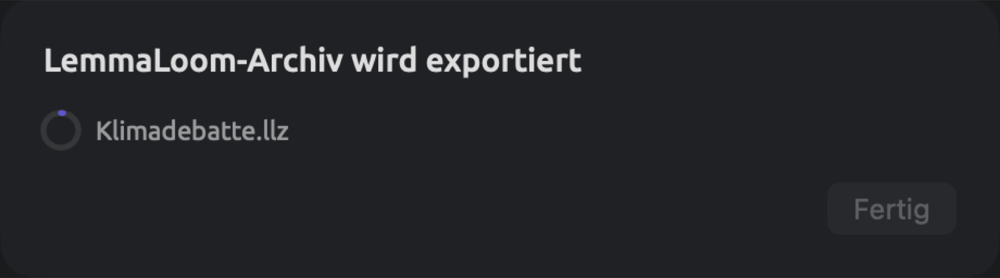
Der Dialog zeigt einen Titel wie LemmaLoom-Archiv wird exportiert, den Namen der Datei, die exportiert oder importiert wird, und einen Ring, der sich mit dem Fortschritt nach und nach füllt. Beim Export von REFI-QDA-Projekten und Codebüchern sowie beim Import von Codebüchern dreht sich anstelle des Rings eine Aktivitätsanzeige. Wie lange ein Import oder Export dauert, hängt vor allem von der Größe des Projekts und der Aufnahmen ab.
Es kann immer nur ein Austausch zur selben Zeit laufen. Bis er abgeschlossen ist, sind alle Befehle zum Importieren und Exportieren von REFI-QDA-Dateien und Archiven deaktiviert, im Menü Ablage ebenso wie in der Seitenleiste. Das Fenster Aktivität führt den laufenden Austausch in der Kategorie Import oder Export auf. Eine ausführliche Beschreibung finden Sie unter Das Fenster „Aktivität“ in Kapitel 4, Material importieren.
Ist der Export abgeschlossen, zeigt der Dialog einen neuen Titel, etwa LemmaLoom-Archiv exportiert. Bis der Austausch abgeschlossen ist, bleibt Fertig deaktiviert; halten Sie den Mauszeiger darauf, erscheint Läuft. Klicken Sie auf Fertig, um den Dialog zu schließen.
Ist der Import abgeschlossen, schließt sich der Dialog von selbst. Ein Projekt aus einem Archiv oder einer REFI-QDA-Datei wird zum aktiven Projekt; neu importierte Dokumente und Codes erscheinen in dem Projekt, das sie aufgenommen hat.
Geht beim Import oder Export etwas schief, bleibt der Dialog geöffnet. Er zeigt dann im Titel eine Fehlermeldung (Import fehlgeschlagen oder Export fehlgeschlagen), gefolgt vom Namen der Datei und einem Grund. Mögliche Gründe sind:
| Meldung | Bedeutung |
|---|---|
| Die Datei ist kein REFI-QDA-Projekt. | Die .qdpx-Datei enthält keine Projektbeschreibung. Sie ist vielleicht beschädigt, oder es handelt sich um eine andere Art von Datei, die umbenannt wurde. |
| Die Datei ist kein REFI-QDA-Codebuch. | Die .qdc-Datei ist kein Codebuch. |
| Die Datei ist kein LemmaLoom-Archiv. | Die .llz-Datei wurde nicht von LemmaLoom geschrieben, oder sie ist beschädigt. |
| Dieses Archiv wurde mit einer neueren Version von LemmaLoom erstellt. | Aktualisieren Sie LemmaLoom und importieren Sie das Archiv dann erneut. |
| Öffnen Sie ein Projekt, in das importiert werden soll. | Die Datei enthält ein Codebuch, ein Set oder Dokumente, die in ein vorhandenes Projekt gehören, und es war kein Projekt aktiv. Klicken Sie in der Seitenleiste auf ein Projekt und versuchen Sie es erneut. |
| Die Datei ist kein gültiges Archiv. oder Das Archiv ist beschädigt. | Jede .qdpx- und .llz-Datei ist eine ZIP-Datei, und diese hier ist unvollständig oder beschädigt. Kopieren Sie sie erneut von ihrer Quelle. |
| Das Archiv verwendet ein Format, das LemmaLoom nicht lesen kann. | Die ZIP-Datei ist mit einem Passwort geschützt oder mit einem anderen Verfahren als dem üblichen Deflate komprimiert. Exportieren Sie sie im anderen Programm erneut, diesmal ohne Passwort. |
| Die Bibliothek ist nicht verfügbar. | LemmaLoom konnte seine Bibliothek oder das Projekt nicht erreichen. Warten Sie, bis die Seitenleiste Ihre Projekte anzeigt, und versuchen Sie es dann erneut. |
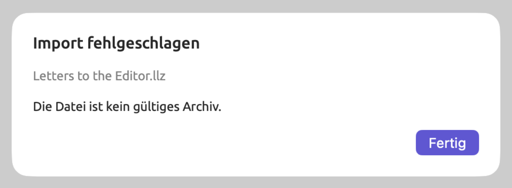
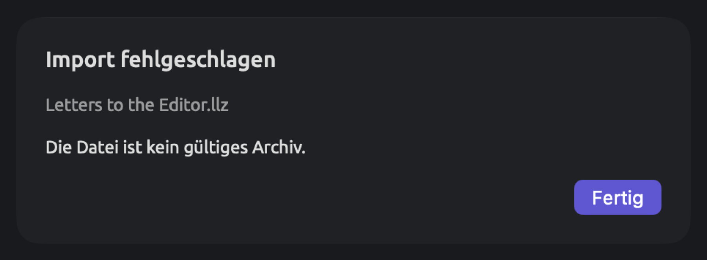
Klicken Sie auf Fertig, um den Dialog zu schließen. Gelingt ein Export nicht, löscht LemmaLoom die unvollständige Datei. Wollten Sie eine vorhandene Datei ersetzen, ist auch diese Datei gefährdet.
LemmaLoom-Archive
Archive brauchen Sie, wenn Sie Projekte vor dem Löschen sichern, ein Projekt auf einen anderen Rechner übertragen oder Teile davon an Kolleginnen und Kollegen weitergeben, die ebenfalls mit LemmaLoom arbeiten. Nur Archive bewahren die Indizierung von LemmaLoom und Ihre gesicherten Abfragen.
Was ein Archiv enthält
Unabhängig vom Umfang enthält ein Archiv zu jedem Dokument:
- den Text des Dokuments in der bearbeiteten Fassung, bei Audio- und Videodokumenten außerdem das Transkript mit Sprechern und Zeiten sowie eine Kopie der Aufnahme;
- die Metadaten des Dokuments, also seine Eigenschaften, seine Farbe, seine Tags und seine Werte für die Attribute des Projekts;
- seine Indizierung mit Sätzen, Wörtern, Lemmata, Wortarten und Satzbäumen, zusammen mit den Ergebnissen der eingebauten und der eigenen Analysatoren (siehe Kapitel 21, Analyse und Indizierung);
- seine Kodierungen, Lesezeichen und Memos;
- seine Übersetzungen, jeweils mit Text, Indizierung und Kodierungen.
Alles Weitere hängt vom Umfang ab. Ein Code kann auf ein einzelnes Dokument oder Set beschränkt sein (siehe Wo ein Code verwendet werden kann in Kapitel 7, Kodieren); solche Codes heißen im Folgenden beschränkt.
| Inhalt | Projekt | Set | Ausgewählte Dokumente |
|---|---|---|---|
| Dokumente | Alle Dokumente des Projekts | Die Dokumente des Sets und ihre Übersetzungen | Die ausgewählten Dokumente und ihre Übersetzungen |
| Codes | Alle Codes mit ihren Memos | Die Codes, die in den Kodierungen, Memos und Abfragen des Archivs vorkommen, die auf eines seiner Dokumente oder auf das Set beschränkten Codes und die übergeordneten Codes all dieser Codes, jeweils mit ihren Memos | Die Codes, die in den Kodierungen, Memos und Abfragen des Archivs vorkommen, die auf eines seiner Dokumente beschränkten Codes und die übergeordneten Codes all dieser Codes, jeweils mit ihren Memos |
| Code-Sets | Alle | Keine | Keine |
| Verknüpfungen | Alle | Verknüpfungen, deren beide Enden in Dokumenten des Archivs liegen | Wie bei einem Set |
| Gruppen | Alle | Die Gruppen der Dokumente des Archivs und die Gruppen, die in den Bedingungen des Sets genannt sind | Die Gruppen der Dokumente des Archivs |
| Sets | Alle Sets und intelligenten Sets | Das exportierte Set, bei einem intelligenten Set mit seinen Bedingungen | Keine |
| Attribute | Alle | Alle außer denen, die an einem Code definiert sind, den das Archiv nicht enthält, mit den Werten der Dokumente, Kodierungen und Memos des Archivs | Wie bei einem Set |
| Wörterbücher | Alle | Keine | Keine |
| Gesicherte Abfragen | Die für das Projekt, seine Sets, seine Tags oder seine Dokumente gesicherten | Die für das Projekt, für das Set oder für eines seiner Dokumente gesicherten | Die für das Projekt oder für eines der Dokumente gesicherten |
| Eigene Analysatoren | Die, deren Befunde bei den Dokumenten gespeichert sind, die, die eine enthaltene Abfrage verwendet, und die, die aus einer enthaltenen Abfrage erzeugt wurden | Wie bei einem Projekt | Wie bei einem Projekt |
| Name, Farbe, Tags und Projektmemos des Projekts | Ja | Nein | Nein |
Abfragen, bei denen Verfügbar in auf Alle Projekte steht, gehören zu Ihrer Bibliothek und werden nur mit einer Kopie Ihrer gesamten Bibliothek übertragen (siehe Abfragen sichern in Kapitel 15, Eine Abfrage erstellen). Wie Abfragen und Analysatoren übertragen werden, erklärt Abfragen in LemmaLoom-Archiven in Kapitel 18, Abfrageergebnisse nutzen ausführlicher.
Ein Projekt exportieren
- Klicken Sie in der Seitenleiste auf das Projekt, zum Beispiel „Klimadebatte“.
- Wählen Sie Ablage ▸ Exportieren ▸ LemmaLoom-Projekt.
- Der Dialog zum Sichern schlägt den Namen des Projekts vor,
Klimadebatte. Ändern Sie ihn, wenn Sie möchten, wählen Sie einen Ordner und klicken Sie auf Sichern. - Wenn im Dialog LemmaLoom-Archiv exportiert steht, klicken Sie auf Fertig.
Die Archivdatei heißt Klimadebatte.llz. Um das Projekt zu importieren und wiederherzustellen, folgen Sie den Schritten im Abschnitt Ein Archiv importieren weiter unten in diesem Kapitel.
Ein Set exportieren
Ein Set-Archiv exportiert einen Teil eines Projekts mit den Codes, die darin verwendet werden. So enthält das Set „Aktivisten“ im Projekt „Klimadebatte“ die sechs Dokumente der Aktivisten.
- Klicken Sie im Abschnitt Sets der Seitenleiste auf das Set, zum Beispiel „Aktivisten“.
- Wählen Sie Ablage ▸ Exportieren ▸ LemmaLoom-Set, oder klicken Sie mit der rechten Maustaste auf das Set und wählen Sie Exportieren.
- Der Dialog zum Sichern schlägt den Namen des Sets vor. Wählen Sie einen Ordner und klicken Sie auf Sichern.
- Wenn im Dialog LemmaLoom-Archiv exportiert steht, klicken Sie auf Fertig.
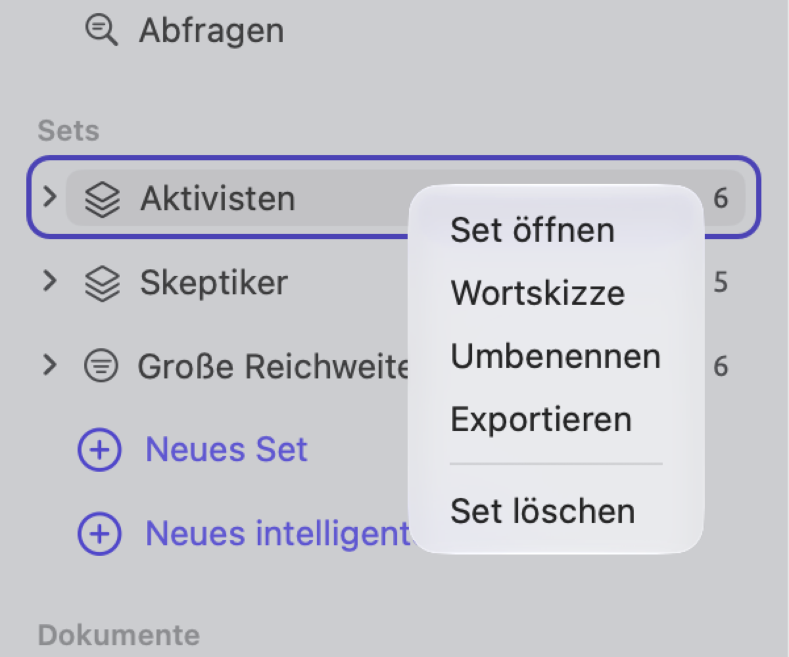
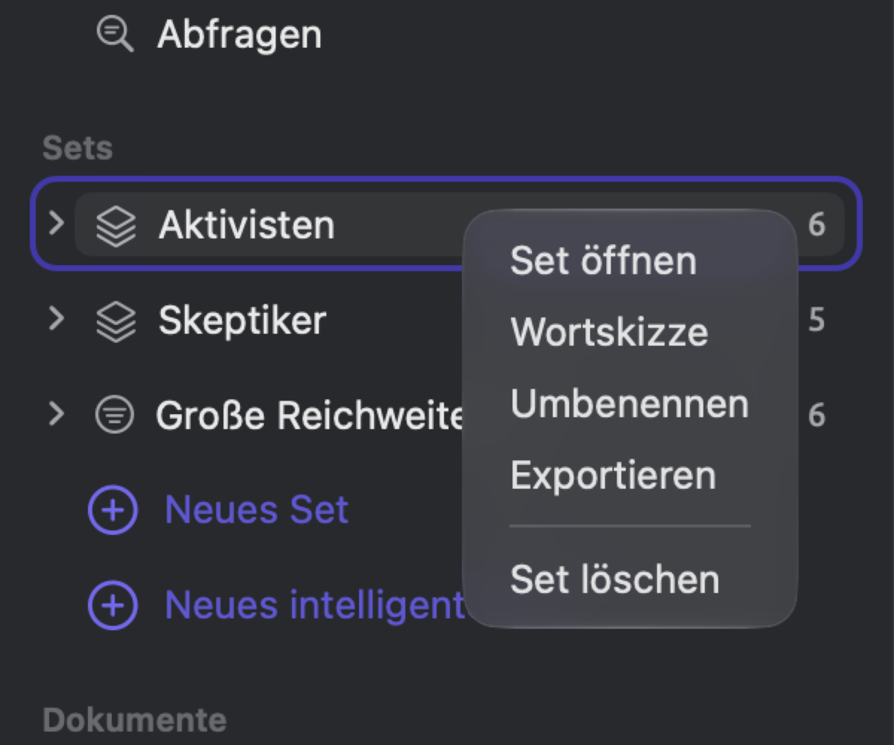
Ablage ▸ Exportieren ▸ LemmaLoom-Set exportiert das Set, das in der Seitenleiste markiert ist, oder das Set, das im aktiven Tab geöffnet ist.
Das Archiv enthält alle Dokumente des Sets samt ihren Übersetzungen. Für „Aktivisten“ erhalten Sie also sieben Dokumente: die sechs Texte der Aktivisten und „Uns läuft die Zeit davon (Englisch)“, die Übersetzung eines der Dokumente in diesem Set. Code-Sets, Wörterbücher und alle Codes außer den oben genannten enthält das Set-Archiv nicht. Braucht Ihre Kollegin oder Ihr Kollege Ihr vollständiges Codesystem, schicken Sie zusätzlich einen Codebuch-Export im REFI-QDA-Format (siehe REFI-QDA-Codebücher weiter unten in diesem Kapitel).
Ein intelligentes Set wird mit den Dokumenten exportiert, die zum Zeitpunkt des Exports seine Bedingungen erfüllen, und mit diesen Bedingungen selbst. In einem anderen Projekt wendet das intelligente Set seine Bedingungen auf alle Dokumente dieses Projekts an; es können dort also mehr Dokumente die Bedingungen erfüllen als beim Export. Aus der „Klimadebatte“ exportiert, kommt das intelligente Set „Große Reichweite“, das Dokumente sammelt, deren „Reichweite“ größer oder gleich 100.000 ist, mit seinen sechs Dokumenten an, dazu „Uns läuft die Zeit davon (Englisch)“, dessen Original zu diesen sechs Dokumenten gehört. Hat das Projekt einer Kollegin ein Attribut „Reichweite“, sammelt dieses intelligente Set auch ihre Dokumente mit einem Wert größer oder gleich 100.000.
Um alle Dokumente mit einem bestimmten Tag weiterzugeben, klicken Sie zuerst im Abschnitt Tags auf das Tag, um zu sehen, welche Dokumente es tragen. Wählen Sie diese Dokumente dann im Abschnitt Dokumente aus und exportieren Sie sie wie im nächsten Abschnitt beschrieben.
Dokumente exportieren
Exportieren Sie einzelne Dokumente, wenn Sie einer Kollegin oder einem Kollegen nur ein paar Texte für einen einmaligen Zweck geben möchten, etwa für eine zweite Lektüre von drei Texten der Skeptiker. Sollen die Dokumente als benannte Sammlung ankommen, exportieren Sie ein Set, denn dann bringt das Archiv das Set mit.
- Klicken Sie im Abschnitt Dokumente der Seitenleiste auf ein Dokument. Um mehrere zu exportieren, nehmen Sie die übrigen mit ⌘-Klick hinzu oder wählen Sie mit ⇧-Klick eine zusammenhängende Reihe aus.
- Wählen Sie Ablage ▸ Exportieren ▸ LemmaLoom-Dokumente (bei einem einzelnen Dokument LemmaLoom-Dokument), oder klicken Sie mit der rechten Maustaste auf eines der ausgewählten Dokumente und wählen Sie Exportieren.
- Der Dialog zum Sichern schlägt den Titel des Dokuments vor, bei mehreren Dokumenten den Namen des Projekts. Wählen Sie einen Ordner und klicken Sie auf Sichern.
- Wenn im Dialog LemmaLoom-Archiv exportiert steht, klicken Sie auf Fertig.
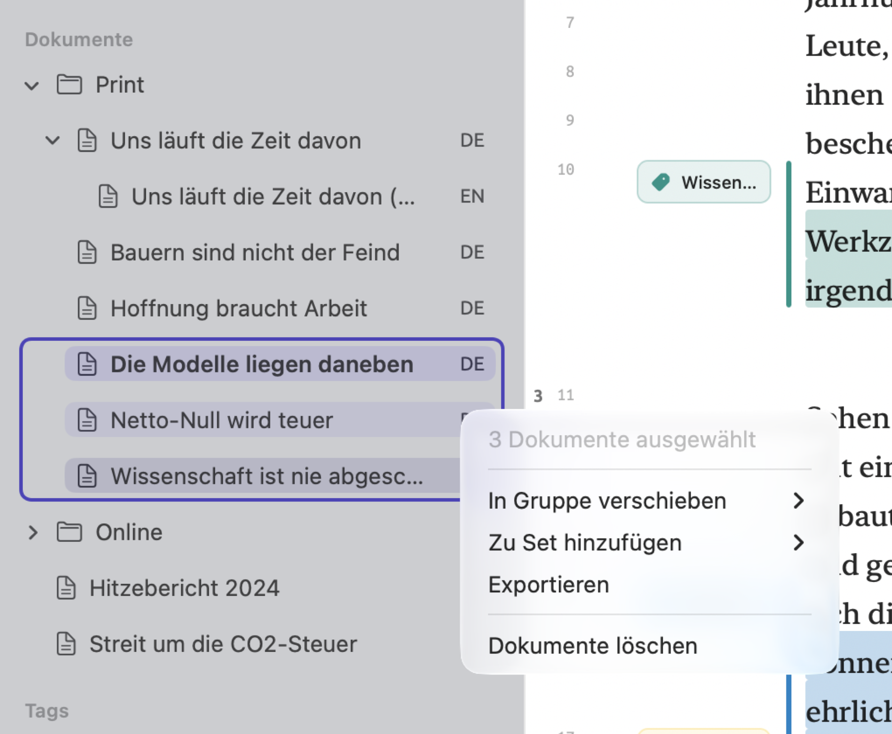
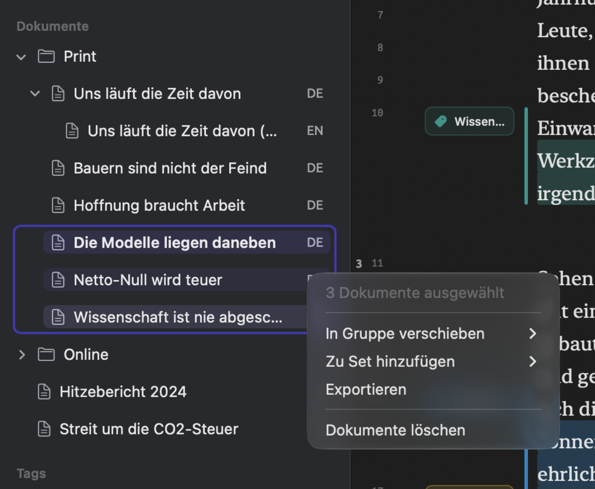
Ist in der Seitenleiste kein Dokument ausgewählt, exportiert Ablage ▸ Exportieren ▸ LemmaLoom-Dokument das Dokument im aktiven Tab.
Wenn Sie ein Originaldokument exportieren, werden auch alle seine Übersetzungen exportiert. Mit „Uns läuft die Zeit davon“ wird also auch „Uns läuft die Zeit davon (Englisch)“ exportiert. Exportieren Sie eine Übersetzung allein, kommt sie als gewöhnliches Dokument mit ihrem Inhalt und ihren Kodierungen an.
Ein Archiv importieren
Was beim Import eines Archivs geschieht, hängt von seinem Umfang ab:
- Ein Projektarchiv wird beim Import zu einem neuen Projekt mit den Eigenschaften des importierten Projekts, also seinem Namen, seiner Farbe und seinen Tags, ganz gleich, welches Projekt gerade aktiv ist.
- Ein Set- oder Dokumentarchiv wird in das gerade aktive Projekt importiert. Ist kein Projekt aktiv, schlägt der Import mit der Meldung Öffnen Sie ein Projekt, in das importiert werden soll. fehl. Haben Sie noch kein Projekt, legen Sie zuerst ein leeres an (siehe Ein Projekt anlegen in Kapitel 2, Erste Schritte).
So importieren Sie ein Archiv:
- Bei einem Set- oder Dokumentarchiv klicken Sie in der Seitenleiste auf das Projekt, das es aufnehmen soll. Bei einem Projektarchiv überspringen Sie diesen Schritt.
- Wählen Sie Ablage ▸ Importieren ▸ LemmaLoom-Archiv.
- Wählen Sie die
.llz-Datei aus und klicken Sie auf Öffnen.
Ein Doppelklick auf die .llz-Datei im Finder importiert das Archiv auf dieselbe Weise. Importieren Sie dasselbe Projektarchiv ein zweites Mal, entstehen zwei Projekte mit genau demselben Namen; benennen Sie in diesem Fall eines davon um (siehe Das Kontextmenü eines Projekts in Kapitel 3, Projekte und Dokumente).
Die importierten Dokumente sind sofort indiziert und stehen für Lenses, den Grammatik-Inspektor und Abfragen bereit. Anschließend prüft LemmaLoom die Bibliothek im Hintergrund und indiziert nur, was noch fehlt (siehe Kapitel 21, Analyse und Indizierung). Auch die Aufnahmen werden in die Bibliothek kopiert.
Um alles wieder zu entfernen, was ein Archivimport hinzugefügt hat, löschen Sie das neu angelegte Projekt. Bei einem Set- oder Dokumentarchiv löschen Sie die importierten Dokumente und das Set (siehe Dokumente löschen in Kapitel 3, Projekte und Dokumente) und danach die Codes, Gruppen und Attribute, die der Import hinzugefügt hat, etwa „Anpassung“ im Beispiel unten.
Ein Projekt auf einen anderen Mac übertragen
- Klicken Sie auf dem ersten Mac in der Seitenleiste auf das Projekt und wählen Sie Ablage ▸ Exportieren ▸ LemmaLoom-Projekt.
- Kopieren Sie die
.llz-Datei auf den anderen Mac, zum Beispiel per AirDrop oder auf einem externen Laufwerk. - Doppelklicken Sie auf dem anderen Mac im Finder auf die Datei, oder wählen Sie Ablage ▸ Importieren ▸ LemmaLoom-Archiv, wählen Sie die Datei aus und klicken Sie auf Öffnen.
- Öffnen Sie einige Dokumente und prüfen Sie, ob Kodierungen, Memos und Aufnahmen vorhanden sind.
- Wenn Sie das Projekt auf dem ersten Mac nicht mehr brauchen, löschen Sie es dort.
Abfragen, bei denen Verfügbar in auf Alle Projekte steht, werden in der Bibliothek gespeichert. Wenn Sie die gesamte Bibliothek kopieren, kopieren Sie alle Ihre Projekte und die darin enthaltenen Abfragen auf einmal; eine Anleitung dazu finden Sie unter Wo die Arbeit gespeichert wird in Kapitel 2, Erste Schritte.
Wie ein Archiv in ein vorhandenes Projekt eingefügt wird
Wird ein Set- oder Dokumentarchiv in ein vorhandenes Projekt importiert, werden seine Dokumente hinzugefügt und überall dort mit dem Vorhandenen verbunden, wo die Namen übereinstimmen.
- Dokumente werden hinzugefügt, auch wenn das importierende Projekt bereits Dokumente mit denselben Titeln enthält; importieren Sie ein Archiv erneut, sind die Dokumente danach also doppelt vorhanden.
- Gruppen werden über ihre Namen zugeordnet; Unterschiede in Groß- und Kleinschreibung und Leerzeichen vor oder nach dem Namen werden dabei ignoriert. Die Dokumente einer zugeordneten Gruppe kommen in die Gruppe des Zielprojekts.
- Codes werden einander zugeordnet, wenn sie denselben Namen haben und unter demselben übergeordneten Code stehen, ohne Rücksicht auf Groß- und Kleinschreibung und auf Leerzeichen am Rand. Kodierungen, Memos und Abfragen, die sich auf den Code beziehen, verweisen danach automatisch auf den Code des importierenden Projekts. Beschreibung und Farbe des Codes bleiben so, wie sie im Zielprojekt sind; die importierten Memos zu dem Code kommen zu seinen Memos hinzu. Attribute an dem Code werden über gleiche Namen zugeordnet. Ein beschränkter Code wird immer hinzugefügt; gehört sein Dokument oder Set nicht zum Archiv, kommt er als Code des ganzen Projekts an.
- Attribute werden über ihren Namen zugeordnet. Unterscheiden sich die Typen, gilt der Attributtyp des Zielprojekts. Die Werte werden in diesen Typ umgewandelt; Werte, die sich nicht umwandeln lassen, entfallen.
- Sets werden immer hinzugefügt, auch wenn es im Projekt bereits ein Set mit demselben Namen gibt; der Name ist dann doppelt vorhanden. Die Bedingungen eines importierten intelligenten Sets werden entsprechend der Umwandlung der Werte angepasst.
- Gesicherte Abfragen werden hinzugefügt und bleiben an das Dokument, das Set oder das Tag gebunden, für das sie gesichert wurden.
- Eigene Analysatoren gelten für alle Projekte; neue werden hinzugefügt und erscheinen unter Fenster ▸ Analysatoren.
Das Set einer Kollegin importieren
Angenommen, eine Kollegin, die dieselbe Debatte untersucht wie Sie, schickt Ihnen Leserbriefe.llz mit einem Set aus vier Leserbriefen aus ihrem eigenen Projekt. Klicken Sie in der Seitenleiste auf „Klimadebatte“ und importieren Sie die .llz-Datei. Die folgende Tabelle fasst zusammen, was mit der Gruppe, den Codes, dem Attribut und dem Set aus dem Archiv geschieht.
| Im Archiv | In der „Klimadebatte“ | Ergebnis |
|---|---|---|
| Gruppe „Print“ | Gruppe „Print“ | Die Leserbriefe aus „Print“ kommen in die vorhandene Gruppe. |
| Code „fristen“ unter „Dringlichkeit“ | Code „Fristen“ unter „Dringlichkeit“ | Zugeordnet, da die Zuordnung Groß- und Kleinschreibung ignoriert. Die Kodierungen der Kollegin verwenden jetzt Ihren Code „Fristen“. |
| Code „Angst“ auf oberster Ebene | Code „Angst“ unter „Emotionen“ | Getrennt gehalten, weil die übergeordneten Codes verschieden sind. Ein neuer Code „Angst“ auf oberster Ebene kommt hinzu. |
| Code „Anpassung“ | Kein solcher Code | Hinzugefügt. |
Attribut „Reichweite“, Typ Text, mit den Werten 120000, 45000, 310000 und etwa 80000 | „Reichweite“, Typ Ganzzahl | Die Werte 120000, 45000 und 310000 kommen als Zahlen an. etwa 80000 ist Text und entfällt deshalb; bei diesem Leserbrief bleibt „Reichweite“ leer. |
| Set „Leserbriefe“ | Kein solches Set | Hinzugefügt, mit den vier Leserbriefen. |
Danach enthält die „Klimadebatte“ 19 Dokumente, und Ihr Codebuch hat zwei Codes namens „Angst“ an verschiedenen Stellen. Die Leserbriefe mit 120.000 und 310.000 Lesern kommen außerdem zu „Große Reichweite“ hinzu, das damit insgesamt acht Dokumente enthält. Meinen beide Codes dasselbe, führen Sie sie zusammen, wie unter Codes zusammenführen in Kapitel 7, Kodieren beschrieben. Tragen Sie den fehlenden Wert für „Reichweite“ in den Dokumenteigenschaften nach.
Die Archivdatei
Eine .llz-Datei ist eine ZIP-Datei. Wenn Sie sie entpacken, können Sie ihren Inhalt selbst ansehen.
Ein Archiv lässt sich in die Version von LemmaLoom importieren, die es erstellt hat, und in neuere Versionen (siehe Der Austauschdialog weiter oben in diesem Kapitel). Wenn Sie Archive mit Kolleginnen und Kollegen austauschen möchten, ist es hilfreich, wenn alle die neueste Version von LemmaLoom verwenden.
REFI-QDA-Projekte
REFI-QDA-Projektdateien (.qdpx) sind ZIP-Dateien mit einer Projektbeschreibung namens project.qde (XML) und den Dokumenten in einem Ordner namens sources. Mit Projektdateien geben Sie Ihre Projekte an alle weiter, deren Software das REFI-QDA-Format unterstützt, und laden das Projekt einer solchen Kollegin oder eines solchen Kollegen in LemmaLoom.
Daten, die es nur in LemmaLoom gibt, etwa die Indizierung, gesicherte Abfragen, Wörterbücher und Analysatoren, werden nur in einem LemmaLoom-Archiv übertragen.
Einige gängige Elemente heißen im REFI-QDA-Standard anders:
| REFI-QDA | LemmaLoom |
|---|---|
| Quelle (Source) | Dokument |
| Selektion (Selection) | Eine Textstelle, meist eine kodierte |
| Notiz (Note) | Memo |
| Variable | Attribut |
| Fall (Case) | LemmaLoom schreibt pro Dokument einen unbenannten Fall mit seinen Attributwerten; ein benannter Fall aus einem anderen Programm wird zu einem Set. |
| Set | Ein Set von Dokumenten oder ein Code-Set |
Ein REFI-QDA-Projekt exportieren
- Klicken Sie in der Seitenleiste auf das Projekt, zum Beispiel „Klimadebatte“.
- Wählen Sie Ablage ▸ Exportieren ▸ REFI-QDA-Projekt.
- Der Dialog zum Sichern schlägt den Namen des Projekts vor. Wählen Sie einen Ordner und klicken Sie auf Sichern.
- Wenn im Dialog REFI-QDA-Projekt exportiert steht, klicken Sie auf Fertig.
Die Datei heißt Klimadebatte.qdpx. Suchen Sie im anderen Programm nach einem Importbefehl, der REFI-QDA oder QDPX im Namen trägt.
LemmaLoom speichert Ihr Projekt so:
| In LemmaLoom | In der .qdpx-Datei |
|---|---|
| Text-, PDF- und Webseitendokumente | Textquellen mit dem aktuellen Text der Dokumente |
| Audio- und Videodokumente | Audio- oder Videoquellen mit der Aufnahme und dem Transkript. Die Zeitangaben des Transkripts werden als Synchronisationspunkte geschrieben, sodass Kodierungen an ihre Stelle in der Aufnahme gebunden bleiben. |
| Übersetzungen | Eigene Quellen: Textquellen für übersetzten Text und Audio- oder Videoquellen mit einer eigenen Kopie der Aufnahme für übersetzte Aufnahmen. |
| Autoren, Datum, Publikation, Verlag, URL und DOI | Die Beschreibung der Quelle, eine Zeile pro Feld, mit den Feldnamen in der Sprache der Oberfläche, etwa Datum: 2024-08-21 |
| Codes mit ihrer Hierarchie, ihren Farben und Beschreibungen | Das Codebuch |
| Kodierungen | Kodierte Selektionen, jeweils mit dem Datum, an dem die Kodierung vorgenommen wurde |
| Memos zu einer Textstelle | Notizen zur Selektion |
| Kodierte Memos (siehe Kodierte Memos in Kapitel 7, Kodieren) | Notizen zur Kodierung mit demselben Code an dieser Textstelle oder, wenn die Textstelle keine solche Kodierung hat, zur Selektion |
| Memos zu einem ganzen Dokument, zu einem Code oder zum Projekt | Notizen zur Quelle, zum Code oder zum Projekt |
| Verknüpfungen | Links zwischen Selektionen, mit ihren Farben. Die Relation wird zum Namen des Links, der Kommentar zu einer Notiz. |
| Attribute | Variablen. Eine Auswahl wird zu einer einfachen Textvariablen. |
| Attributwerte | Ein Fall pro Dokument mit den Werten dieses Dokuments |
| Sets und intelligente Sets | Sets von Quellen. Ein intelligentes Set wird mit den Dokumenten geschrieben, die es zum Zeitpunkt des Exports enthält. |
| Gruppen | Sets von Quellen, benannt nach der Gruppe |
| Code-Sets | Sets von Codes |
Nicht in der Datei enthalten sind:
- die Indizierung und alles, was darauf aufbaut, etwa Textstatistiken und Wortskizzen (LemmaLoom indiziert die importierten Dokumente neu);
- gesicherte Abfragen, Lenses, die auf Abfragen beruhen, Wörterbücher, eigene Analysatoren und Lesezeichen;
- Tags an Dokumenten, Codes, Memos und Verknüpfungen;
- Farben und Sprachen der Dokumente, Namen der Sprecher in Transkripten sowie Attributwerte an Kodierungen und Memos;
- die Verbindung zwischen einer Übersetzung und ihrem Original;
- die Beschränkung eines Codes auf ein bestimmtes Dokument oder Set, sodass alle solchen Codes beim Import zu Codes des ganzen Projekts werden;
- das Format eines Codes, sodass alle Codes beim Import Hervorheben verwenden;
- Aufnahmen über 2 GB; ein solches Dokument wird als Textquelle gespeichert, die nur sein Transkript enthält.
Die exportierte Datei nennt Sie als Autorin oder Autor, mit dem vollständigen Namen Ihres macOS-Benutzerkontos. Außerdem werden LemmaLoom und seine genaue Version als das Programm gespeichert, mit dem das Projekt erstellt wurde.
Ein REFI-QDA-Projekt importieren
- Wählen Sie Ablage ▸ Importieren ▸ REFI-QDA-Projekt.
- Wählen Sie die
.qdpx-Datei aus und klicken Sie auf Öffnen. - Ist der Import abgeschlossen, öffnen Sie zwei oder drei Dokumente und prüfen Sie, ob die Kodierungen auf den Wörtern liegen, auf denen sie vorgenommen wurden.
Ein Doppelklick auf eine .qdpx-Datei im Finder importiert sie auf genau dieselbe Weise. Der Import legt jedes Mal ein neues Projekt an. Es erhält den Namen, der in der Datei steht, oder, wenn dort keiner steht, den Dateinamen. Das neue Projekt wird zum aktiven Projekt, und seine Dokumente werden im Hintergrund indiziert. Den Fortschritt der Indizierung können Sie im Fenster Aktivität verfolgen. Bei Bedarf wiederholen Sie den Vorgang, indem Sie das Projekt löschen und die .qdpx-Datei erneut importieren.
So liest LemmaLoom die Datei:
In der .qdpx-Datei | In LemmaLoom |
|---|---|
| Textquellen | Dokumente mit dem Text der Quelle. Die Formatierung von Rich-Text-Quellen entfällt. |
| PDF-Quellen | Dokumente mit dem Text des PDFs, aus der Textfassung, die das andere Programm gespeichert hat, oder, falls es keine gibt, aus dem PDF selbst |
| Audio- und Videoquellen mit Transkript | Audio- oder Videodokumente. Das Transkript wird zum Text, und seine Synchronisationspunkte werden zu Passagen mit Zeitangaben. Die Aufnahme wird in die Bibliothek kopiert, wenn die Datei sie enthält. |
| Audio- und Videoquellen ohne Transkript, Bildquellen und Quellen ganz ohne Text, etwa ein gescanntes PDF ohne Textebene oder eine Quelle, auf die die Datei verweist, ohne sie zu enthalten | Entfallen |
| Die Beschreibung einer Quelle | Autoren, Datum und andere Eigenschaften des Dokuments, sofern die Beschreibung die Form hat, in der LemmaLoom exportiert, mit den Feldnamen auf Englisch oder in der Sprache Ihrer Oberfläche; andernfalls ein Memo zum Dokument |
| Codes | Codes für das ganze Projekt, mit ihrer Hierarchie, ihren Farben und Beschreibungen |
| Kodierungen von Selektionen | Kodierungen derselben Textstellen, jeweils mit ihrem Datum |
| Eine Kodierung einer ganzen Quelle | Eine Kodierung des gesamten Textes des Dokuments |
| Die Beschreibung einer Selektion | Ein Memo zur Textstelle |
| Notizen | Eine Notiz zu einer Selektion wird zu einem Memo zur Textstelle, eine Notiz zu einer Kodierung zu einem kodierten Memo. Notizen zu einer Quelle oder einem Code werden zu Memos zum Dokument oder zum Code. Eine Notiz, die zu nichts gehört, wird zu einem Projektmemo, eine Notiz zu einem Link zum Kommentar der Verknüpfung. |
| Links zwischen Selektionen | Verknüpfungen. Der Name des Links wird zur Relation. |
| Variablen | Attribute. Integer wird zu Ganzzahl, Float zu Dezimalzahl, Boolean zu Boolescher Wert, Date und DateTime zu Datum und alles andere zu Text. |
| Fälle | Ihre Werte gehen an die Dokumente, die zu ihnen gehören. Ein benannter Fall wird außerdem zu einem Set dieser Dokumente. |
| Sets | Sets von Dokumenten und Code-Sets |
Eine Quelle ohne Namen erhält den Titel Importiertes Dokument. Fehlen nach einem Import aus einem anderen Programm Dokumente, exportieren Sie das Projekt dort erneut und achten Sie darauf, dass die Quellen in die exportierte Datei aufgenommen werden.
Die Sprache jedes Dokuments wird anhand seines Inhalts bestimmt. Wurde sie falsch erkannt, korrigieren Sie sie von Hand in den Dokumenteigenschaften; LemmaLoom indiziert das Dokument dann in der gewählten Sprache neu (siehe Indizierung in Kapitel 3, Projekte und Dokumente).
Da LemmaLoom nur Text kodieren kann, entfallen Kodierungen von Bereichen auf einer PDF-Seite oder in einem Bild.
Selektionen werden mit Angaben zu ihrem Anfang und ihrem Ende gespeichert, beide in Zeichen gezählt, meist zusammen mit einem Auszug des Textes in der Selektion. Verschiedene Programme zählen Zeichen unterschiedlich; manche zählen einen Zeilenumbruch als zwei Zeichen. LemmaLoom probiert jede gängige Zählweise aus und behält die, bei der der größte Anteil der Auszüge übereinstimmt.
REFI-QDA-Codebücher
Eine REFI-QDA-Codebuchdatei (.qdc) enthält nur eine Sammlung von Codes mit ihrer Hierarchie, ihren Farben und Beschreibungen sowie die Code-Sets.
Ein Codebuch exportieren
- Klicken Sie in der Seitenleiste auf das Projekt.
- Wählen Sie Ablage ▸ Exportieren ▸ REFI-QDA-Codebuch.
- Der Dialog zum Sichern schlägt den Namen des Projekts vor. Wählen Sie einen Ordner und klicken Sie auf Sichern.
- Wenn im Dialog REFI-QDA-Codebuch exportiert steht, klicken Sie auf Fertig.
Das Codebuch enthält jeden einzelnen Ihrer Codes an seiner Stelle in der Hierarchie. Jedes Code-Set, das Codes enthält, erscheint mit seinen Codes. Ein Code, der auf ein Dokument oder Set beschränkt ist, wird wie jeder andere geschrieben, ohne seine Beschränkung, und kommt als Code des ganzen Projekts zurück.
Ein Codebuch importieren
Importierte Codes kommen in das aktive Projekt.
- Klicken Sie in der Seitenleiste auf das Projekt, das die Codes erhalten soll.
- Wählen Sie Ablage ▸ Importieren ▸ REFI-QDA-Codebuch.
- Wählen Sie die
.qdc-Datei aus und klicken Sie auf Öffnen.
Ein Doppelklick auf die .qdc-Datei im Finder importiert die Datei auf dieselbe Weise.
Für jeden Code in der importierten Datei sucht LemmaLoom unter den Codes mit demselben übergeordneten Code nach einem Code mit demselben Namen, ohne Rücksicht auf Groß- und Kleinschreibung. Gibt es einen Treffer, wird dieser Code verwendet, und die Suche geht bei seinen Untercodes weiter. Gibt es keinen, wird ein neuer Code mit den Eigenschaften aus der importierten Datei angelegt. Code-Sets werden auf dieselbe Weise zugeordnet; ein zugeordnetes Code-Set erhält die Codes aus der Datei, die es noch nicht enthält.
Der Import der Datei ist ein einziger Widerrufschritt. Mit Bearbeiten ▸ REFI-QDA-Codebuch widerrufen oder ⌘Z entfernen Sie alle hinzugefügten Codes und Code-Sets, und die hinzugefügten Codes werden wieder aus den vorhandenen Code-Sets herausgenommen.
Das Codebuch einer Forschungsgruppe importieren
Angenommen, eine Forschungsgruppe schickt Klimarhetorik.qdc. Die Datei enthält einen Code „Wissenschaft“ mit den Untercodes „Unsicherheit“ und „Konsens“, einen Code „Ironie“ auf oberster Ebene und ein Code-Set „Argumente“ mit „Unsicherheit“ und „Konsens“. Beim Import in die „Klimadebatte“ ändert LemmaLoom das Codebuch so:
- Der Code „Wissenschaft“ auf oberster Ebene und sein Untercode „Unsicherheit“ sind in der „Klimadebatte“ bereits vorhanden.
- „Konsens“ wird als Untercode von „Wissenschaft“ neben „Unsicherheit“ importiert.
- Der Code „Ironie“ wird neben den vorhandenen Codes auf oberster Ebene importiert.
- Das Code-Set „Argumente“, das die Codes „Wissenschaft“, „Unsicherheit“, „Kosten“ und „Verantwortung“ enthält, erhält den neuen Code „Konsens“.
Tabellen und Diagramme exportieren
Die meisten Tabellen lassen sich als CSV-Datei exportieren, die meisten Diagramme und Grafiken als PNG- oder PDF-Bild.
Die Exportschaltfläche
Die Exportschaltfläche zeigt ein Quadrat mit einem nach oben weisenden Pfeil. Sie erscheint in der Überschrift einer Tabelle oder eines Diagramms, in der Kopfzeile der Ansichten im Projektregal oder in der Leiste einer Wortskizze. Sie funktioniert auf eine von zwei Arten:
- Neben einer Tabelle, zu der kein Diagramm gehört, öffnet ein Klick sofort den Dialog zum Sichern einer CSV-Datei. Halten Sie den Mauszeiger auf der Schaltfläche, erscheint Als CSV exportieren.
- Neben einem Diagramm öffnet ein Klick ein Menü mit PNG und PDF und darunter CSV, wenn hinter dem Diagramm eine Tabelle steht. Bewegen Sie den Mauszeiger auf die Schaltfläche, erscheint Exportieren. Strukturdiagramme und das Mosaik lassen sich nur als PNG und PDF exportieren.
Die Schaltfläche erscheint, sobald es etwas zu exportieren gibt. In den Ansichten Kodierungen, Memos und Verknüpfungen des Projektregals sowie in Beziehungen und in der Leiste der Wortskizzen ist sie immer zu sehen. Gibt es dort nichts zu exportieren, ist sie deaktiviert und zeigt Nichts zu exportieren. Im Fenster Attribute und im Fenster Diagramm (siehe Das Fenster Diagramm in Kapitel 11, Der Grammatik-Inspektor) trägt die Schaltfläche die Aufschrift Exportieren.
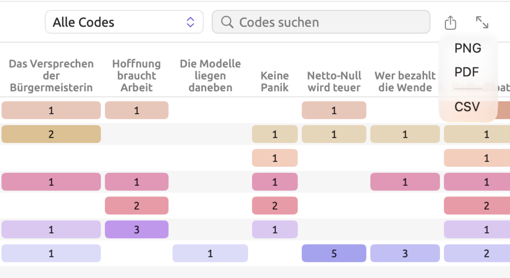
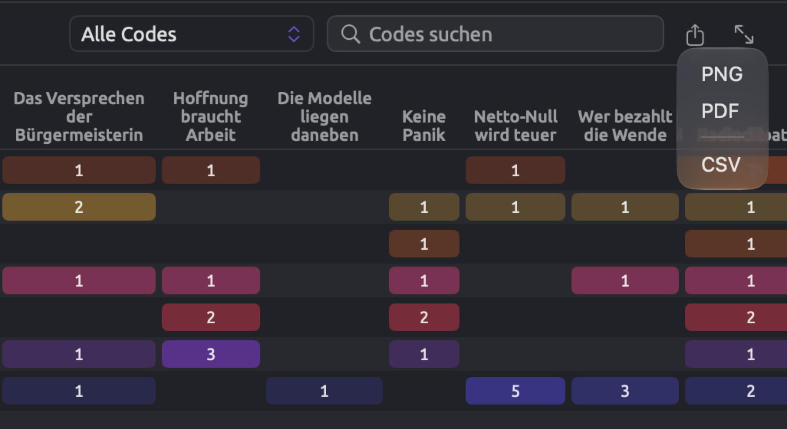
So exportieren Sie:
- Richten Sie die Ansicht so ein, wie Sie sie haben möchten, mit den Codes, dem Filter, der Suche und der Darstellung, die Sie brauchen.
- Klicken Sie auf die Exportschaltfläche und wählen Sie ein Format, falls sich ein Menü öffnet.
- Ändern Sie den vorgeschlagenen Namen, wenn Sie möchten, wählen Sie einen Ordner und klicken Sie auf Sichern.
Vorgeschlagene Dateinamen verbinden das Dokument, das Set oder das Projekt mit dem, was exportiert wird, etwa Uns läuft die Zeit davon-codings oder Klimadebatte-code-matrix. Bei einigen Grammatikansichten richtet sich der Dateiname dagegen nach dem Wort, nach dem Sie gesucht haben, etwa collocates-Klima oder word-sketch-Klima für das Wort Klima.
Der Export enthält alles, was in der Ansicht zu sehen ist. Suche und Filter werden übernommen, auch der Tag-Filter im Codebuch und das Feld Filter eines Abfrageergebnisses. Ausgeblendete Sektoren im Skizzenraum und die gewählte Darstellung bleiben ebenfalls erhalten.
CSV-Dateien
Eine CSV-Datei ist eine reine Textdatei mit durch Kommas getrennten Werten. Jede Zeile enthält einen Wert pro Spalte, getrennt durch Kommas. Die erste Zeile enthält die Spaltennamen in der Sprache der Oberfläche. Tabellen- und Statistikprogramme können CSV-Dateien einlesen.
LemmaLoom schreibt CSV-Dateien nach diesen Regeln:
- Der gesamte Text der Datei ist in UTF-8 kodiert und beginnt mit einer Byte Order Mark (BOM), an der Tabellenprogramme die Zeichenkodierung erkennen.
- Alle Zahlen bestehen aus bloßen Ziffern mit einem Dezimalpunkt, unabhängig von der Region, die Sie auf Ihrem Mac eingestellt haben, etwa
1234.5. Spalten, deren Name auf (%) endet, enthalten Prozentwerte als Zahlen bezogen auf 100, etwa12.35für 12,35 %. - Jede Zelle, die Kommas, doppelte Anführungszeichen oder Zeilenumbrüche enthält oder mit Leerzeichen beginnt oder endet, wird in doppelte Anführungszeichen gesetzt, wie es der CSV-Standard verlangt.
- Zellen, die mit
=,+,-oder@beginnen und sich nicht als Zahl lesen lassen, erhalten einen vorangestellten Apostroph, damit Tabellenprogramme den Wert nicht falsch deuten und etwa ein Memo wie+ die Zahlen mit dem Bericht abgleichenfür eine Formel halten.
Eine Ausnahme bilden die Statistiken der Facette Überblick im Tab Text des Inspektors. Deren CSV-Datei speichert alle Werte so, wie der Inspektor sie zeigt, gegebenenfalls mit der Einheit. Ein Wert lautet dann zum Beispiel 13,9 Wörter.
Erwartet ein Tabellenprogramm, das auf eine Sprache mit Dezimalkomma wie Deutsch eingestellt ist, Semikolons zwischen den Spalten und schreibt es deshalb ganze Zeilen in eine einzige Zelle, öffnen Sie die CSV-Datei mit dem Befehl des Programms zum Importieren von Text- oder CSV-Dateien und wählen Sie das Komma als Trennzeichen.
PNG- und PDF-Bilder
Für die Datei wird das Bild neu gezeichnet. Es erhält Ränder, eine Hintergrundfarbe passend zum aktuellen Thema und eine Breite, die sich nach Ihrem Diagramm richtet. Hervorhebungen unter dem Mauszeiger und Auswahlen sind darin nicht enthalten.
- Das Format PNG wird in Retina-Qualität gezeichnet, unabhängig von Ihrem Bildschirm. PNG eignet sich für Präsentationen, Webseiten und Dokumente aus Textverarbeitungsprogrammen.
- PDF ist eine einzelne Seite in der Größe Ihres Diagramms. Alles in einem PDF bleibt in jeder Vergrößerung scharf. Es eignet sich für den Druck und für Fachzeitschriften, die Vektorgrafiken verlangen.
Bilder, die mit einem dunklen Thema erstellt werden, sind ebenfalls dunkel. Möchten Sie ein Bild in einem Aufsatz verwenden, stellen Sie vor dem Export ein helleres Thema ein, etwa Hell (siehe Themen in Kapitel 24, Einstellungen und Darstellung).
Abfrageergebnisse
Die Exportschaltfläche eines Abfrageergebnisses sitzt ganz rechts in der Ergebnisleiste über den eigentlichen Ergebnissen. In der Facette Abfrage eines Dokuments erscheint sie in der Leiste ganz oben in der Facette. Zur Wahl stehen CSV, Markdown, PNG und PDF, danach folgt Kopieren. Als Dateiname wird der Name der Abfrage vorgeschlagen. Eine Markdown-Datei bewahrt das Ergebnis zusammen mit der Abfrage, ihrem Geltungsbereich, der Zahl der gelesenen Dokumente, der für die Abfrage verwendeten Einstellung Korpus, dem Datum des Exports und der Version von LemmaLoom.

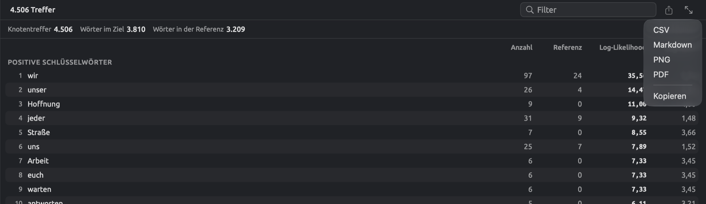
Kopieren legt die Tabelle in die Zwischenablage, mit Tabulatoren zwischen den Spaltenwerten. Die Dateien, die beim Export von Abfrageergebnissen entstehen, beschreibt Ergebnisse exportieren in Kapitel 16, Abfrageergebnisse und Statistik ausführlicher.
Wo Exporte verfügbar sind
Im Inspektor:
| Tab | Ort | Formate | Spalten der CSV-Datei |
|---|---|---|---|
| Text | Überblick, neben der Überschrift des Abschnitts Überblick | CSV | Abschnitt, Maß und Wert, mit jedem Maß der fünf Abschnitte, danach die Zeilen der drei Diagramme |
| Text | Überblick, die Diagramme Wortarten, Funktionen und Phrasen | PNG, PDF, CSV | Kategorie, Anzahl |
| Text | Lesezeichen | CSV | Stelle, Text, Kommentar |
| Grammatik | Struktur, jedes Diagramm, und das Fenster Diagramm | PNG, PDF | |
| Grammatik | Form × Funktion, die Matrix | PNG, PDF, CSV | Form, Gesamt, dann eine Spalte pro Funktion |
| Grammatik | Form × Funktion, die Liste einer Zelle | CSV | Satz, Phrase, Text |
| Grammatik | Kollokationen | CSV | Rang, Kollokat, Wortart, Häufigkeit, Erwartet, Log-Likelihood, MI, MI3, t-Wert, z-Wert, Dice, logDice (alle Maße, gleichgültig, nach welchem die Liste sortiert ist) |
| Grammatik | Wortskizze | PNG, PDF und CSV für die Darstellungen Karte und Netz; CSV für die Liste | Relation, Kollokat, Lemma, Wortart, Häufigkeit, logDice |
| Grammatik | Diskurs | CSV | Kategorie, Satz, Text, Detail |
| Kodierung | Codes, neben Codesystem | CSV | Wie beim Codebuch, siehe unten |
| Kodierung | Kodierungen, wenn Kodierungen gewählt ist | CSV | Code, Stelle, Anfang, Ende, Text |
| Kodierung | Kodierungen, wenn Memos gewählt ist | CSV | Code, Stelle, Text, Memo, Tags |
| Kodierung | Verknüpfungen | CSV | Wie bei Verknüpfungen, siehe unten |
| Kodierung | Code-Statistik, Code-Häufigkeiten & Abdeckung | PNG, PDF, CSV | Code, Segmente, Zeichen, Abdeckung (%) |
| Kodierung | Code-Statistik, Kookkurrenzen | CSV | Code, Code, Überschneidungen, Zeichen, φ, p |
| Kodierung | Code-Statistik, jedes Diagramm unter Attribut-Aufschlüsselungen | PNG, PDF, CSV | Attribut, Wert, Anzahl |
| Kodierung | Porträt, Mosaik | PNG, PDF | |
| Kodierung | Porträt, Codelinie | CSV | Satz, Codes, Text |
| Kodierung | Code-Skizze | PNG, PDF und CSV für die Karte; CSV für die Liste | Wie bei Wortskizze |
| Multimodus | Skizzenraum | PNG, PDF und CSV für die Karte; CSV für die Liste | Code oder Attribut, dann wie bei Wortskizze |
| Multimodus | Abfrage | CSV, Markdown, PNG, PDF, Kopieren | Siehe Ergebnisse exportieren in Kapitel 16, Abfrageergebnisse und Statistik |
Jedes dieser Maße wird im jeweiligen Kapitel erklärt; gesammelt finden Sie sie in Kapitel 27, Statistik im Überblick.
In den Ansichten des Projektregals, für ein Projekt, ein Set oder ein Tag:
| Ansicht | Ort | Formate | Spalten der CSV-Datei |
|---|---|---|---|
| Codebuch | Die Leiste unter der Codeliste | CSV | Code, Pfad, Ebene, Anzahl, Beschreibung, Farbe |
| Codebuch | VERWENDUNG IN DIESEM BEREICH in den Details eines ausgewählten Codes | PNG, PDF, CSV | Dokument, Segmente |
| Kodierungen | Kopfzeile | CSV | Dokument, Code, Text, Anfang, Ende, dann eine Spalte pro Attribut an den Kodierungen |
| Memos | Kopfzeile | CSV | Dokument, Code, Memo, Tags, Anfang, Ende, dann eine Spalte pro Attribut an den Memos |
| Verknüpfungen | Kopfzeile | CSV | Ausgangsdokument, Ausgangstext, Relation, Zieldokument, Zieltext, Kommentar, Tags |
| Code-Statistik | Kopfzeile | PNG, PDF, CSV | Code, Segmente, Dokumente, Zeichen, Abdeckung (%) |
| Code-Statistik | Jedes Diagramm unter Attribut-Aufschlüsselungen | PNG, PDF, CSV | Attribut, Wert, Anzahl |
| Code-Matrix | Kopfzeile | PNG, PDF, CSV | Code, dann eine Spalte pro Dokument oder Gruppe und Gesamt |
| Beziehungen | Kopfzeile, wenn Raster gewählt ist | PNG, PDF, CSV | Code, Segmente, dann eine Spalte pro Code |
| Beziehungen | Kopfzeile, wenn Paare gewählt ist | CSV | Code, Code, Überschneidungen, Zeichen, φ, p |
| Wortskizze | Wie im Inspektor | PNG, PDF, CSV | Wie im Inspektor |
| Wörterbücher | Kategorie-Häufigkeiten und Nach Dokument | PNG, PDF, CSV | Siehe Die Zahlen exportieren in Kapitel 19, Wörterbücher |
| Abfragen | Die Ergebnisleiste | CSV, Markdown, PNG, PDF, Kopieren | Siehe Ergebnisse exportieren in Kapitel 16, Abfrageergebnisse und Statistik |
Dieselben Exporte gibt es im Fenster Codebuch, im Fenster Wortskizze, unter Fenster ▸ Abfragen und bei Abfrageergebnissen, die in einem eigenen Fenster geöffnet sind. Im Fenster Attribute gibt Exportieren die Attributtabelle aus (siehe Attributwerte weiter unten).
Anfang und Ende geben in den exportierten Dateien die Lage einer Textstelle als Zahl der Zeichen vom Beginn des Dokumenttextes an. Stelle nennt die Nummern von Absatz und Satz, in denen die Textstelle liegt, so wie der Inspektor sie anzeigt; ¶12·3 ist also der dritte Satz von Absatz 12.
Exportieren Sie eine Code-Matrix, die nach einem Attribut, einer Gruppe, einer Sprache oder einem Format gruppiert ist, entsteht eine Spalte pro Gruppe, danach die Spalte Gesamt und die Spalten des verwendeten Tests. Die erste Zeile gibt die Basis jeder Gruppe an. Tabellen und Diagramme exportieren in Kapitel 13, Codes auswerten beschreibt, welche Datei dabei entsteht, und Unterschiede zwischen Gruppen testen erklärt, was ihre Zahlen bedeuten.
Das Codebuch als CSV
Jeder Code, den die Liste zeigt, erscheint in der CSV-Datei des Codebuchs in einer eigenen Zeile, gefolgt von seinen Untercodes. Auf jeder Ebene sind die Codes alphabetisch sortiert. Ein Ausschnitt vom Anfang der Datei für die „Klimadebatte“:
| Code | Pfad | Ebene | Anzahl | Beschreibung | Farbe |
|---|---|---|---|---|---|
| Dringlichkeit | Dringlichkeit | 1 | 10 | Aussagen, dass Handeln keinen Aufschub duldet: Notfallsprache, Appelle, jetzt zu handeln, und Warnungen vor Verzögerung. | #C2410C |
| Fristen | Dringlichkeit / Fristen | 2 | 12 | Zieljahre, Countdowns und Stichtage, ob gefordert, versprochen oder kritisiert. | #CA8A04 |
| Kipppunkte | Dringlichkeit / Kipppunkte | 2 | 5 | Schwellen, jenseits derer Schäden sich angeblich selbst verstärken oder unumkehrbar werden, und Argumente darüber, wo sie liegen. | #EA580C |
| Emotionen | Emotionen | 1 | 6 | Gefühle, die die Schreibenden äußern oder anderen zuschreiben, zum Beispiel Trauer, Verzweiflung, Wut oder Müdigkeit. | #DB2777 |
| Angst | Emotionen / Angst | 2 | 12 | Angst und Sorge angesichts des Klimawandels sowie Argumente darüber, ob Angst hilft oder schadet. | #E11D48 |
| Hoffnung | Emotionen / Hoffnung | 2 | 11 | Hoffnung und Zuversicht, dass Veränderung möglich ist, und wie die Schreibenden sie rahmen. | #9333EA |
- Pfad verbindet die Namen der Codes von der obersten Ebene abwärts, getrennt durch Schrägstriche. So unterscheiden Sie gleichnamige Codes, die unter verschiedenen übergeordneten Codes stehen.
- Ebene gibt an, auf welcher Ebene der Hierarchie ein Code steht; 1 steht für einen Code der obersten Ebene, 2 für dessen Untercodes und so weiter.
- Anzahl ist die Zahl, die im Baum neben jedem Code steht, also wie oft der Code in den Originaldokumenten des Projekts, Sets oder Tags verwendet wurde, dessen Codebuch Sie exportieren. Bei „Emotionen“ zählen nur die 6 Verwendungen von „Emotionen“ selbst, nicht „Angst“ oder „Hoffnung“, die jeweils eine eigene Anzahl haben (12 und 11).
Der Export neben Codesystem in der Facette Codes des Inspektors hat dieselben Spalten. Anzahl zählt dort jedoch die Verwendungen im gerade geöffneten Dokument, kodierte Memos eingeschlossen.
Verknüpfungen als CSV
Eine Verknüpfung verbindet zwei Textstellen, meist aus verschiedenen Dokumenten (siehe Verknüpfungen in Kapitel 7, Kodieren). Eine exportierte CSV-Datei enthält eine Zeile pro Verknüpfung:
| Ausgangsdokument | Ausgangstext | Relation | Zieldokument | Zieltext | Kommentar | Tags |
|---|---|---|---|---|---|---|
| Die Modelle liegen daneben | Allein in den Wolken steckt vermutlich mehr Unsicherheit, als irgendeine Pressemitteilung zugeben wird. | widerspricht | Hitzebericht 2024 | Diese Schätzung ist mit einer großen Unsicherheitsspanne behaftet und sollte nur zusammen mit ihr zitiert werden. | Das Amt nennt seine Unsicherheitsspanne ganz offen; die Kolumne unterstellt, offizielle Stellen würden sie verschweigen. |
Relation ist der Wortlaut, den Sie beim Anlegen der Verknüpfung eingegeben haben. Tags listet alle Tags der Verknüpfung auf, getrennt durch Semikolons; in diesem Beispiel ist Tags leer. Ein Export aus der Ansicht Verknüpfungen des Projektregals liefert alle Verknüpfungen, die für das ausgewählte Projekt, Set oder Tag aufgelistet sind. Die Facette Verknüpfungen des Inspektors exportiert die Verknüpfungen des geöffneten Dokuments.
Kodierte Segmente und Memos
Die Ansicht Kodierungen des Projektregals exportiert eine Zeile pro Kodierung. Wurden an Kodierungen Attributwerte erfasst, wird jedes dieser Attribute zu einer zusätzlichen Spalte, die leer bleibt, wenn eine Kodierung keinen Wert hat.
Die Ansicht Memos des Projektregals funktioniert ähnlich, nur treten hier Text und Tags des Memos an die Stelle des kodierten Textes. Bei einem kodierten Memo steht der Name seines Codes in der Spalte Code; bei einem nicht kodierten Memo bleibt sie leer. Ein kodiertes Memo übernimmt die Tags seines Codes, die dann die Zelle Tags in seiner Zeile füllen; die eigenen Tags eines Memos erhalten Sie über die Facette Kodierungen des Inspektors, wenn dort Memos gewählt ist. In der Ansicht Memos eines Projekts erhalten auch Memos, die unabhängig von Dokumenten bestehen, eine Zeile, mit leerer Spalte Dokument.
Attributwerte
Um das Fenster Attribute zu öffnen, wählen Sie Projekt ▸ Attribute, oder Sie klicken mit der rechten Maustaste auf das Projekt und wählen Attribute. Exportieren sichert den Inhalt der Tabelle so, wie er angezeigt wird, mit einer Spalte Dokument und einer eigenen Spalte für jedes Attribut. Jede Zeile steht für ein Dokument, das nach Ihrer Suche sichtbar bleibt, in der angezeigten Reihenfolge. Übersetzungen teilen sich die Zeile ihres Originals und damit dessen Attributwerte.


Die Datei hat das Format, das Importieren im selben Fenster erwartet. Um viele Werte auf einmal zu ändern, exportieren Sie die Tabelle, bearbeiten sie in einem Tabellenprogramm und importieren sie wieder (siehe Attributwerte aus einer Tabelle importieren in Kapitel 4, Material importieren).